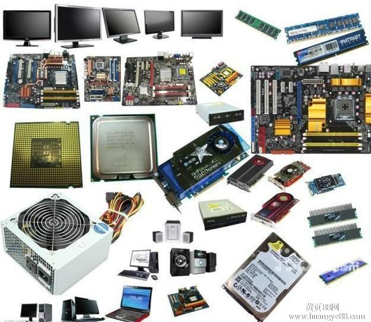
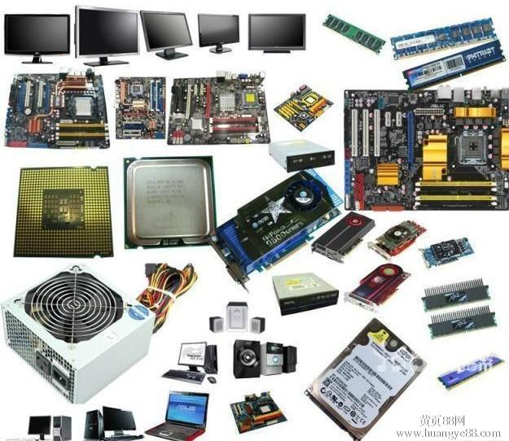

计算机计算机简介
一般我们看到的电脑都是由：主机（主要部分）、输出设备（显示器）、输入设备（键盘和鼠标）三大件组成。而主机是电脑的主体，在主机箱中有：主板、CPU、内存、电源、显卡、声卡、网卡、硬盘、软驱、光驱等硬件。从基本结构上来讲，电脑可以分为五大部分：运算器、存储器、控制器、输入设备、输出设备。
常见的计算机硬件展示

一般我们看到的电脑都是由：主机（主要部分）、输出设备（显示器）、输入设备（键盘和鼠标）三大件组成。而主机是电脑的主体，在主机箱中有：主板、CPU、内存、电源、显卡、声卡、网卡、硬盘、软驱、光驱等硬件。从基本结构上来讲，电脑可以分为五大部分：运算器、存储器、控制器、输入设备、输出设备。
